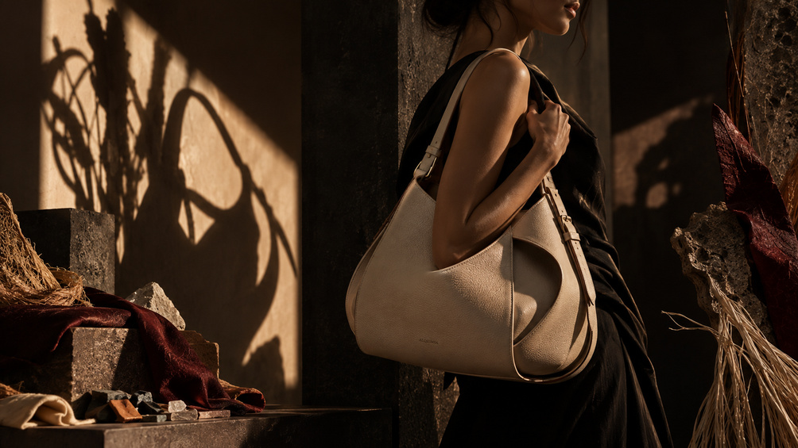

Accesorios contemporáneos · Hecho en Europa
SEE WHAT
OTHERS
DON'T.
Lo que otros descartan. Nosotros lo transformamos.
Descubre AlquimiaUna nueva forma de mirar
¿Y si lo que ya existe pudiera convertirse en algo completamente diferente?
Descubre la transformaciónDe la materia al diseño
LO QUE YA EXISTE
PUEDE TENER UNA
NUEVA HISTORIA
OrigenTransformaciónRecuperaciónConstrucciónIdentidadDiseño


Colección
HISTORIAS QUE
TOMAN FORMA
Diseño contemporáneo. Materiales con una historia.


Nuestra mirada
DISEÑO CON PROPÓSITO
Alquimia nace de una pregunta: ¿qué puede llegar a ser aquello que ya existe? Observamos materiales, historias y posibilidades para convertirlos en objetos contemporáneos con una nueva función y significado.
Conoce nuestra historiaÚnete
FORMA PARTE DE LA TRANSFORMACIÓN.
Descubre nuevas piezas, historias y lanzamientos de Alquimia antes que nadie.
Únete a la waitlist